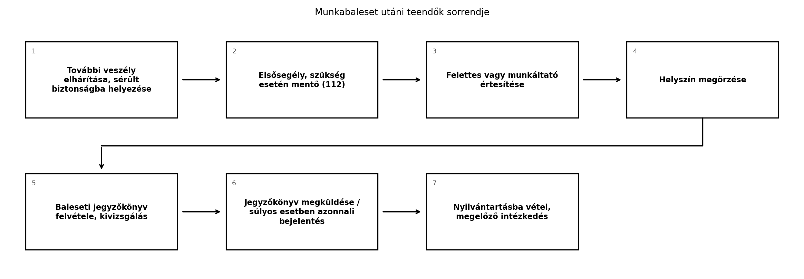

Vasárnapi ebédidőben, a forró konyhán egy fiatal szakács megvágja a kezét csontozás közben. A seb vérzik, a munkatársak nem tudják, ki értesítse a séfet, ki hozza az elsősegélydobozt, és fel kell-e tartani a sérült karját. A baleset után kiderül, hogy a szakács nem vette fel a vágáskesztyűt, mert sietett. A séf azt mondja, hogy a balesetet jelenteni kell, de a tanuló nem tudja, kinek és milyen sorrendben. Ha a munkavédelem szabályait nem ismered, egy ilyen helyzetben értékes percek vesznek el, a baleset súlyosabb lehet, és a jogi következmények is elkerülhetetlenek.
Ebben az alfejezetben megtanulod, hogy milyen jogai és kötelezettségei vannak a munkáltatónak és a munkavállalónak, kik a munkavédelmi szakemberek, és mi a pontos teendő munkabaleset esetén. A tudás nem papírforma: a konyhában a te és a kollégáid egészségét, biztonságát és a munkahelyi folyamatok szabályosságát védi.
Képzeld el, hogy a fenti baleset után a konyhafőnök higgadtan irányít: először a sérültet a biztonságos helyre ültetik, a séf nyomókötést készít az elsősegélydobozból, majd a helyszínt megőrzik, és a baleseti jegyzőkönyvet kitöltik. A folyamat lépéseit a következő ábra mutatja:

A folyamat sorrendje azért fontos, mert először mindig az embert kell menteni, és csak utána következhet a dokumentálás és a vizsgálat.
Jogszabály. A munkavédelem alapjait Magyarországon az Alaptörvény biztosítja: minden munkavállalónak joga van az egészséget nem veszélyeztető, biztonságos munkafeltételekhez. A részletes szabályokat az 1993. évi XCIII. törvény a munkavédelemről, a kémiai biztonsági törvény (2000. évi XXV. törvény), a Munka Törvénykönyve (2012. évi I. törvény) és a végrehajtási rendeletek tartalmazzák. A konkrét paragrafusok és a hatósági eljárás részletei a mindenkor hatályos jogszabályokban és a munkahelyi munkavédelmi szabályzatban találhatók (ellenőrizendő: hatályos szöveg, pontos jogszabályi hivatkozások). A szabványok általában nem kötelezőek, de jó iránymutatók; a helyi előírások viszont minden munkavállalóra kötelezőek.
Definíció. Baleset. Olyan hirtelen bekövetkező, váratlan esemény, amely külső fizikai vagy kémiai hatásra következik be, és sérülést, egészségkárosodást vagy halált okoz.
Definíció. Munkabaleset. Olyan baleset, amely a munkavállalót a munkavégzés során vagy azzal összefüggésben éri. Nem munkabaleset például az, ha valaki otthon ég meg főzés közben. A munkába járás közben bekövetkező baleset besorolása külön szabályoktól függ (ellenőrizendő: besorolási szabály).
Definíció. Foglalkozási megbetegedés. Olyan betegség, amely a munkaköri ártalom következtében, hosszabb idő alatt alakul ki, és szerepel a foglalkozási megbetegedések jegyzékében. A konyhán ilyen lehet például a tartós nedves közeg okozta bőrbetegség, a hosszú évek alatt kialakuló halláskárosodás zajos gépek mellett, vagy a vegyszerek okozta légúti érzékenység (ellenőrizendő: foglalkozási betegségek jegyzéke).
A munkavédelem alapelve: a biztonságos munkavégzés közös felelősség. A munkáltató és a munkavállaló kötelezettségei egymásra épülnek, ezért ezeket együtt kell ismerni.
| Ki? | Fő kötelezettség | Példa a konyhán |
|---|---|---|
| Munkáltató | Egészséget nem veszélyeztető, biztonságos munkafeltételek biztosítása | Csúszásmentes padló, működő elszívás, megfelelő világítás |
| Munkáltató | Munkaeszközök biztonságos állapota, karbantartás | Kések élezése, gépek burkolata, gázkészülékek ellenőrzése |
| Munkáltató | Védőeszközök biztosítása | Vágáskesztyű, hőálló kesztyű, csúszásmentes cipő, kötény |
| Munkáltató | Munkavédelmi oktatás, tájékoztatás | Munkába lépéskor, új gép vagy technológia bevezetésekor |
| Munkáltató | Kockázatértékelés készítése és felülvizsgálata | A konyhai veszélyek felmérése, dokumentálása |
| Munkáltató | Foglalkozás-egészségügyi orvosi vizsgálat biztosítása | Előzetes, időszakos alkalmassági vizsgálat |
| Munkáltató | Munkabalesetek kivizsgálása, nyilvántartása, bejelentése | Jegyzőkönyv felvétele, hatósági értesítés |
| Munkavállaló | A munkát előírás szerint, biztonságosan végezni | A konyhai technológiai utasítások betartása |
| Munkavállaló | A védőeszközt rendeltetésszerűen használni | Vágáskesztyű felvétele csontozáshoz |
| Munkavállaló | A gépet, eszközt csak rendeltetésszerűen használni, hibát jelenteni | Szeletelőgépnél a tolófát használni, hibás kábel jelentése |
| Munkavállaló | Mások egészségét, biztonságát nem veszélyeztetni | Forró zsiradékot nem hagyni őrizetlenül |
| Munkavállaló | Az oktatáson részt venni, az egészségügyi vizsgálaton megjelenni | A tanultakat a gyakorlatban alkalmazni |
| Munkavállaló | Balesetet, veszélyhelyzetet, hibát haladéktalanul jelenteni | Vágási sérülés azonnali jelentése |
Szabály. A munkáltató köteles a munkavállalót a munkakörhöz kapcsolódó kockázatokról és az azok elkerüléséhez szükséges magatartási szabályokról tájékoztatni. A munkavállaló köteles ezeket a szabályokat elsajátítani és betartani. A munkavállaló nem utasítható olyan munkára, amelyre nincs kiképezve, vagy amelynek veszélyeiről nem tájékoztatták (ellenőrizendő: pontos jogszabályi megfogalmazás).
A munkáltató munkavédelmi feladatait nem veheti félvállról. A kockázatok szakszerű kezelésére munkabiztonsági szakembert kell foglalkoztatnia vagy szerződtetnie, ha a munkavédelmi szabályok ezt előírják (ellenőrizendő: mikor kötelező belső szakember). A munkabiztonsági szakember segít a kockázatértékelésben, a balesetek kivizsgálásában, a munkahelyi munkavédelmi program összeállításában.
A foglalkozás-egészségügyi orvos a munkavállaló egészségi alkalmasságát vizsgálja. A konyhai munkakörben előzetes, időszakos és soron kívüli orvosi vizsgálat is előírható. A vizsgálat célja, hogy a dolgozó ne kerüljön olyan munkakörbe, ahol az egészségi állapota miatt nagyobb a baleset vagy a megbetegedés kockázata (ellenőrizendő: vizsgálati gyakoriság, a munkaköri alkalmasság szabályai).
Definíció. Munkavédelmi képviselő. A munkavállalók által választott személy, aki a munkavállalókat képviseli a munkavédelmi kérdésekben.
A munkavédelmi képviselő jogai közé tartozik: - ellenőrizheti a munkahelyet, a munkaeszközöket és a védőeszközöket; - tájékoztatást kérhet a munkáltatótól a kockázatértékelésről és a balesetekről; - részt vehet a munkabalesetek kivizsgálásában; - kezdeményezheti a súlyos veszély elhárítását, sőt indokolt esetben a munkavégzés felfüggesztését kérheti; - a munkavállalókat tájékoztathatja a munkavédelmi kérdésekről.
Szabály. A munkavédelmi képviselőt munkavédelmi tevékenysége miatt hátrány nem érheti. A munkáltató köteles vele együttműködni, és a szükséges időt biztosítani a feladatai ellátásához (ellenőrizendő: pontos jogi garancia).
A munkabaleset után a teendők sorrendje az élet védelmétől a dokumentálásig halad. A helyes sorrendet a következő lépések mutatják:
Eljárás: munkabaleset utáni teendők.
Továbbvitt eredmény. Az itt megtanult sorrend – előbb a sérült, azután a dokumentáció – alapja az Elsősegély konyhai sérüléseknél alfejezetnek, ahol a konkrét elsősegélynyújtási műveleteket tanuljuk. A munkáltatói és munkavállalói jogviszonyból eredő felelősséget a Munkajogi alapismeretek és a munkaviszony létesítése alfejezetben tekintjük át részletesen.
Figyelem. Súlyos balesetnél soha ne azzal foglalkozz, hogy ki hibázott. Előbb a sérültet lásd el, és értesítsd a mentőt, mert a haladéktalan elsősegély életet menthet.
A munkavédelemben a minőségellenőrzés azt jelenti, hogy a munkavállaló és a munkáltató is rendszeresen ellenőrzi, hogy a biztonsági szabályok érvényesülnek-e. A konyhai műszak kezdete előtt a szakácsnak célszerű végiggondolnia:
Ezek a kérdések nem a hatósági ellenőrzés szintjét jelentik, de a napi rutin részei, és a balesetek megelőzését szolgálják.
Hiba 1: A baleset eltitkolása. A dolgozó megvágja magát, de nem szól, mert fél a felelősségre vonástól vagy attól, hogy hibának könyvelik el. Ok: a munkahelyi légkörben a hibáztatás dominál, vagy a dolgozó nem tudja, hogy a jelentés kötelező. Helyes gyakorlat: minden balesetet, sérülést haladéktalanul jelenteni kell. A bejelentés nem büntetés, hanem a megelőzés és a munkavállaló védelmének eszköze.
Hiba 2: A helyszín dokumentálás nélküli feltakarítása. A dolgozó azonnal felmossa a vért, elrakja a kést, mert a konyhának működnie kell. Ok: a napi nyomás, a vendégek kiszolgálása. Helyes gyakorlat: a helyszín állapotát előbb rögzíteni kell (fénykép, tanúk, vázlat), a veszélyes részt (forró edény, csúszós padló) pedig ezután azonnal meg kell szüntetni. A többi nyomot a kivizsgálásig ne változtasd meg.
Hiba 3: A védőeszköz nem használata, mert „körülményes”. A szakács melegen tartási feladathoz nem vesz hőálló kesztyűt, vagy csontozáskor elhagyja a vágáskesztyűt. Ok: kényelem, sietség, a kockázat lebecsülése. Helyes gyakorlat: a védőeszközt minden alkalommal viselni kell, mert azt a munkáltató a kockázatértékelés alapján írta elő, és a munkavállaló köteles használni.
Alkalmazás. Egy vidéki étterem konyháján a fiatal commis (szakácssegéd) a nagy forgalmú péntek esti műszakban csontozás közben megszúrta a tenyerét. A seb mély volt, vérzett. A dolgozó nem szólt, csak konyharuhával szorította, és folytatta a munkát. Az esti zárás után sem jelentette, mert attól tartott, hogy kirúgják. Másnapra a seb elfertőződött, orvosi ellátást igényelt, és a munkavállaló három napot ki is esett.
A munkáltató csak akkor értesült a balesetről, amikor a dolgozó táppénzes papírt hozott. Ekkor már nem tudta pontosan rekonstruálni a helyszínt, a tanúk sem emlékeztek pontosan a körülményekre, és a jegyzőkönyv felvétele nehézségekbe ütközött. A jegyzőkönyv hatóságnak való megküldése és az esetleges bejelentés elmaradt, mert a munkáltató nem tudott a balesetről időben.
Tanulság: a baleset eltitkolása a dolgozónak és a munkáltatónak is kárt okoz. A dolgozó egészsége károsodott, a munkáltató pedig elesett attól a lehetőségtől, hogy időben kivizsgálja az esetet és megtegye a megelőző intézkedéseket, például a vágáskesztyű használatának kötelezővé tételét.
1. feladat (A)
Csoportosítsd a következő tevékenységeket aszerint, hogy a munkáltató
vagy a munkavállaló kötelezettségei közé tartoznak:
2. feladat (A)
Fogalmazd meg röviden, mit jelent a munkabaleset, és adj két konkrét
konyhai példát.
3. feladat (B)
Állítsd helyes sorrendbe az alábbi lépéseket munkabaleset esetén:
4. feladat (B)
Munkavédelmi képviselő vagy egy étteremben. A konyhában rendszeresen
csúszik a padló, mert a mosogatóból kifolyik a víz. Milyen jogokat tudsz
gyakorolni, és mit kezdeményezhetsz?
5. feladat (C)
Elemzés: egy szakács a forró olajos fritőz mellett dolgozik, amikor a
nedves padlón megcsúszik, és a karját a forró olajnak fröccsentő
edényhez üti; a keze megég. A kollégája azonnal felmossa a vizet, majd a
sérültet a hűtőbe ülteti, és hideg vizet folyat a kezére. A séf csak
órák múlva értesül, a baleseti jegyzőkönyvet másnap veszik fel. Határozd
meg, mi volt helyes, mi volt hibás, és mi lett volna a helyes
sorrend.
6. feladat (D)
Készíts rövid ellenőrzőlistát a konyhai munka megkezdése előtti
munkavédelmi ellenőrzéshez, legalább hat ponttal. Mindegyik ponthoz írd
oda, miért fontos a balesetek megelőzése szempontjából.
Önellenőrzés – válaszok
1. feladat
Munkáltatói kötelezettség: csúszásmentes padló kialakítása, munkavédelmi
oktatás megszervezése, foglalkozás-egészségügyi vizsgálat biztosítása,
munkaeszközök biztonságos állapotának biztosítása.
Munkavállalói kötelezettség: vágáskesztyű viselése, rendeltetésszerű
használat, baleset bejelentése.
2. feladat
Munkabaleset a munkavállalót a munkavégzés során vagy azzal
összefüggésben érő, hirtelen bekövetkező, sérüléssel járó esemény.
Konyhai példa: szakács a szeletelőgép használata közben megsérti az
ujjbegyét; mosogató megcsúszik a vizes padlón, és eltöri a
csuklóját.
3. feladat
Helyes sorrend: további veszély elhárítása → elsősegélynyújtás →
felettes értesítése → helyszín megőrzése → baleseti jegyzőkönyv
felvétele → jegyzőkönyv megküldése / súlyos esetben azonnali bejelentés
→ nyilvántartásba vétel.
4. feladat
Munkavédelmi képviselőként ellenőrizhetem a konyhát, jelezhetem a
csúszásveszélyt a munkáltatónak. Jogom van tájékoztatást kérni a
kockázatértékelésről, és javasolni a csúszásmentes szőnyeg
felszerelését. Ha a veszély súlyos, kezdeményezhetem a munkavégzés
felfüggesztését, és a munkavállalókat tájékoztathatom. A munkáltató
köteles a kifogást kivizsgálni, és indokolt esetben intézkedni.
5. feladat
Helyes lépések: a sérült azonnali ellátása (az égés hűtése hűvös – nem
jeges –, tiszta folyóvízzel, 10–20 percig; ellenőrizendő: aktuális
elsősegély-ajánlás), mentő hívása, ha a sérülés súlyos, a felettes
azonnali értesítése. Hibás lépések: a víz felmosása a helyszín
dokumentálása nélkül (helyes: előbb lefényképezni, majd azonnal
feltörölni a forró olaj melletti csúszásveszély miatt); a sérültet
hűtőbe ültetni (a konyhai hűtő nem megfelelő környezet, ráadásul
élelmiszer-biztonsági kockázatot jelent); a baleseti jegyzőkönyv
késedelmes felvétele. A helyes sorrend: veszély megszüntetése,
elsősegély, felettes értesítése, helyszín megőrzése, jegyzőkönyv
felvétele, jegyzőkönyv megküldése, súlyos esetben azonnali bejelentés,
nyilvántartás.
6. feladat
Ellenőrzőlista-példa (a tartalom az üzemi munkavédelmi szabályzattól
függ):
A munkavédelem közös felelősség: a munkáltató biztosítja a biztonságos munkahelyet, a munkaeszközöket, a védőfelszerelést, az oktatást, a kockázatértékelést és a foglalkozás-egészségügyi vizsgálatot; a munkavállaló pedig betartja a szabályokat, használja a védőeszközt, jelenti a hibát és a balesetet. A munkavédelmi képviselő a dolgozókat képviseli, ellenőriz és kezdeményezheti a veszélyek elhárítását. A munkabaleset a munkavégzés során bekövetkező hirtelen sérülés; a foglalkozási megbetegedés hosszabb idő alatt, munkaköri ártalom miatt alakul ki. Továbbvitt eredmény. Munkabaleset esetén a helyes sorrend: a további veszély elhárítása, a sérült biztonságba helyezése, elsősegély és szükség esetén mentőhívás, a felettes értesítése, a helyszín megőrzése, baleseti jegyzőkönyv és kivizsgálás, súlyos esetben hatósági bejelentés, végül nyilvántartás és megelőző intézkedés. Ezt a sorrendet alkalmazzuk az Elsősegély konyhai sérüléseknél alfejezetben, a munkajogi összefüggéseket pedig a Munkajogi alapismeretek alfejezetben mélyítjük el.